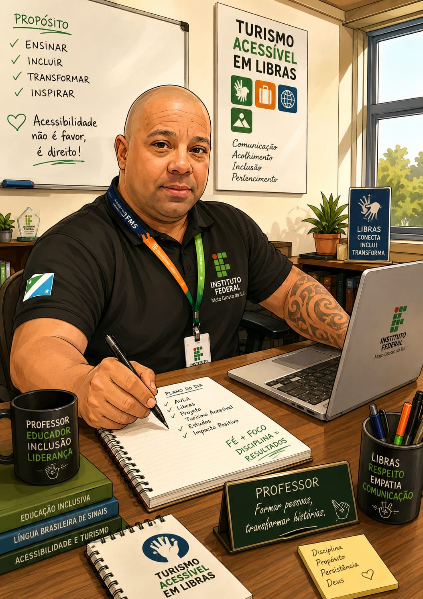
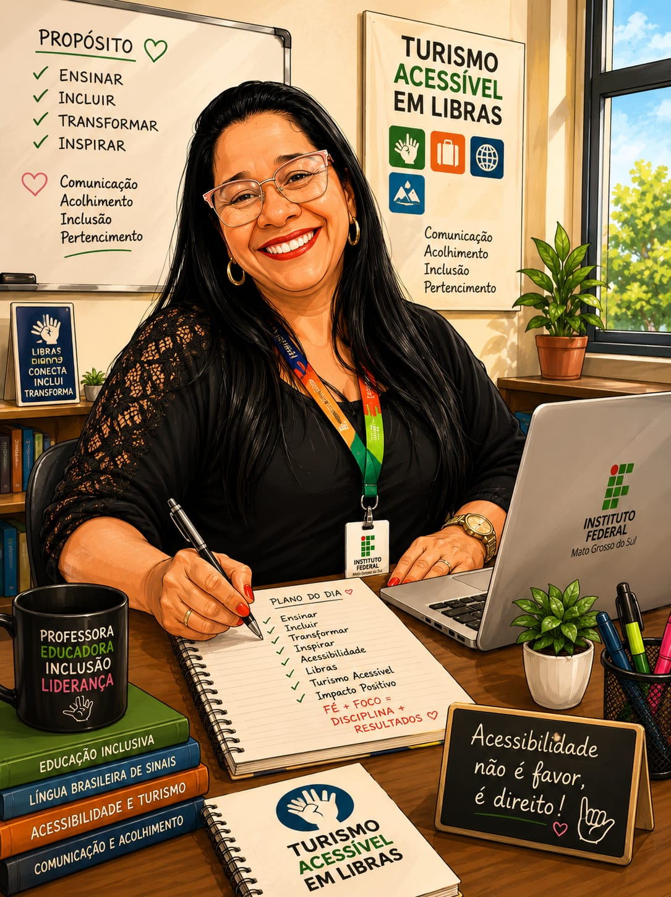
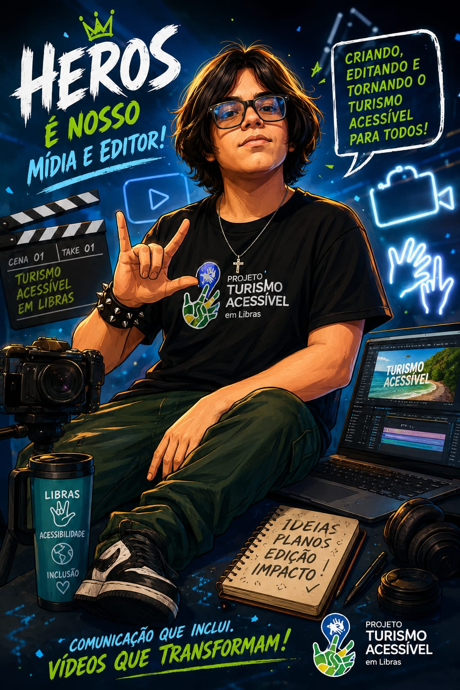
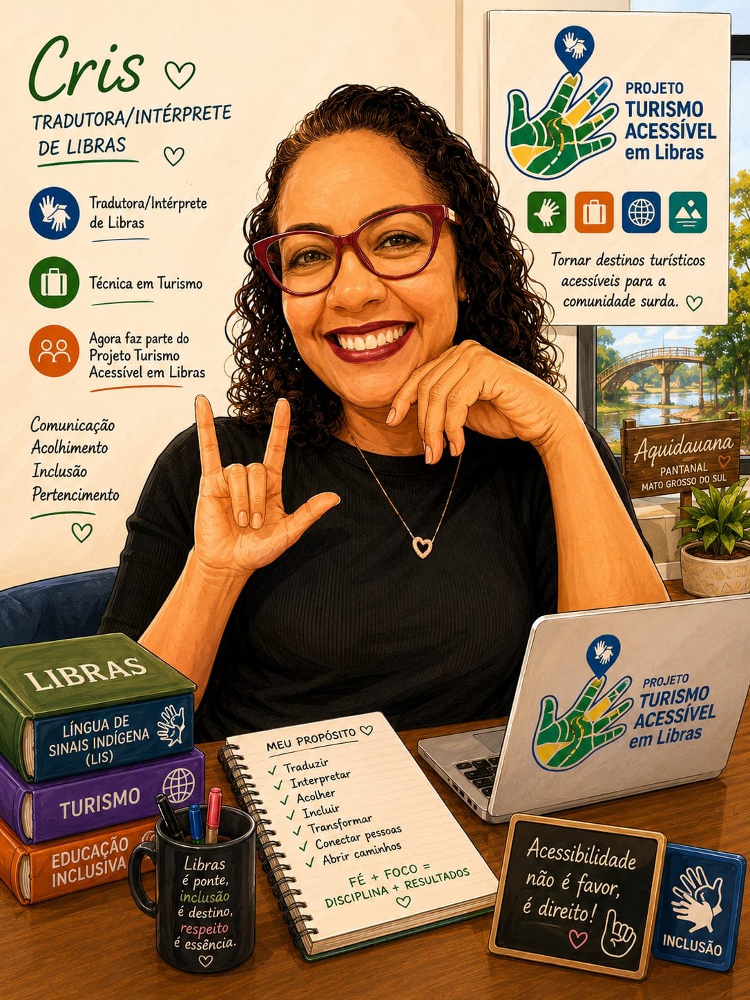
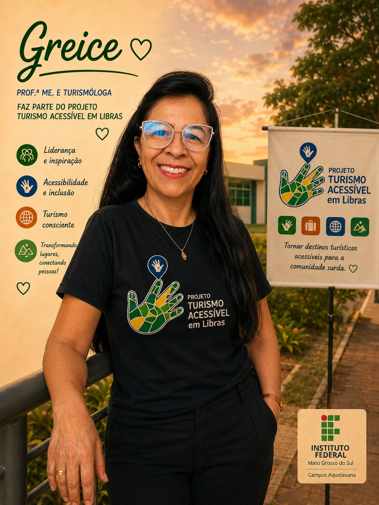
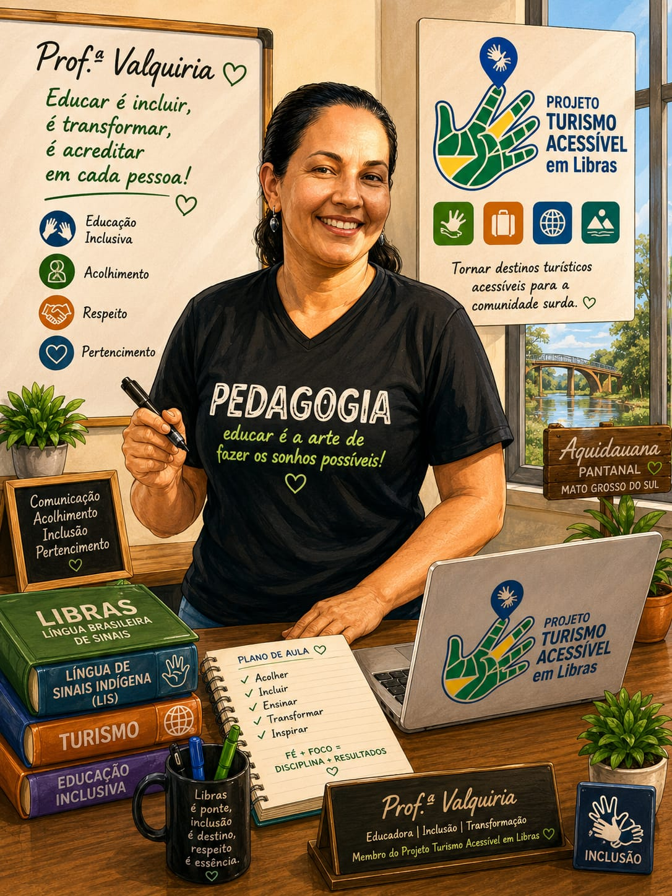
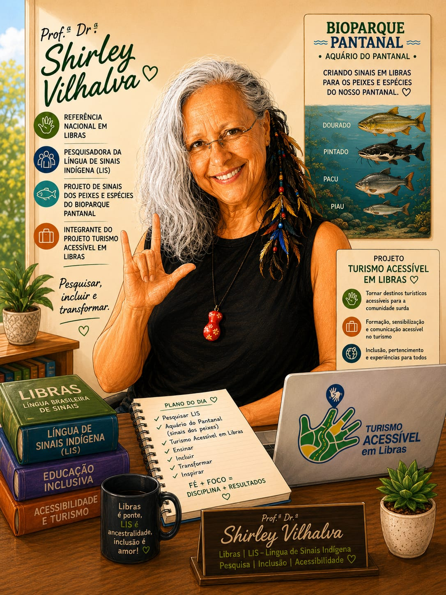
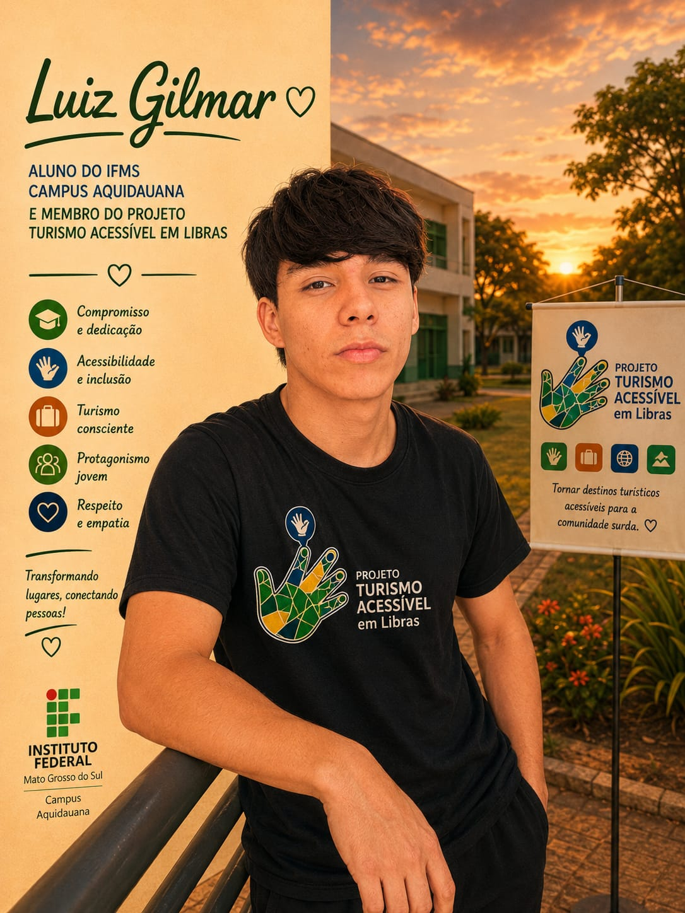
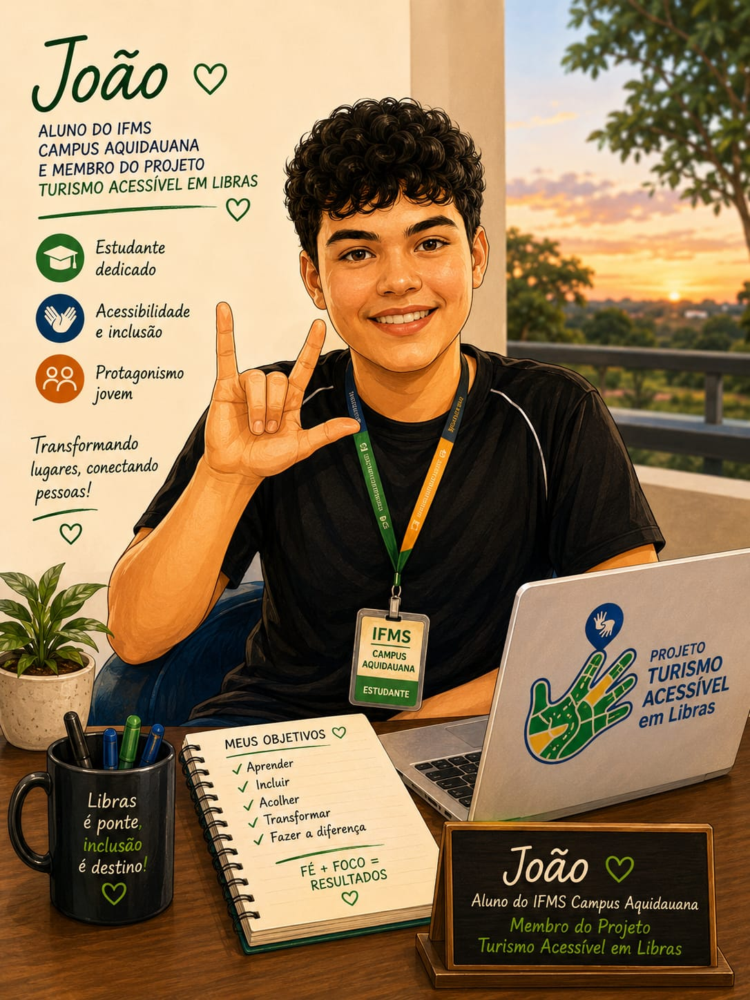
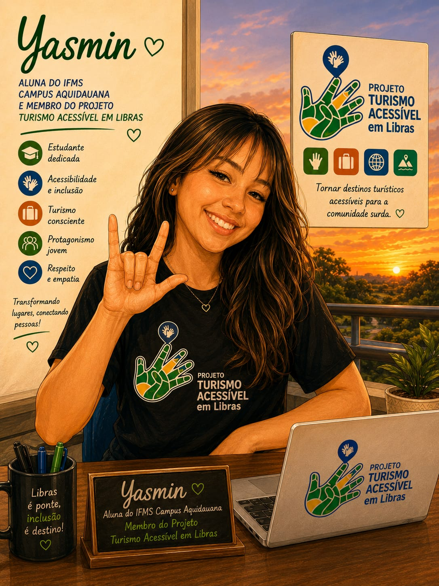

Glossário Bilíngue
Criação de sinais e organização de conteúdos em Português e Libras para atrativos turísticos locais.
Projeto de extensão voltado à inclusão comunicacional da comunidade surda nos atrativos turísticos de Aquidauana e região, por meio de sinais em Libras, vídeos acessíveis e QR Codes.
Conteúdo acessível, vídeos em Libras e recursos digitais para ampliar a autonomia de visitantes surdos.
O projeto busca tornar os espaços turísticos mais acessíveis para pessoas surdas, valorizando a Libras, a cultura surda e o direito à informação.
Criação de sinais e organização de conteúdos em Português e Libras para atrativos turísticos locais.
Uso de QR Codes para direcionar visitantes a vídeos em Libras com informações sobre cada atrativo.
Promoção do acesso à informação turística com foco na autonomia e na participação social.
Trabalho colaborativo entre coordenação, intérpretes, estudantes, mídia e desenvolvimento.
Uma ferramenta para registrar, divulgar e ampliar o acesso aos sinais relacionados ao turismo de Aquidauana e região.
Conheça alguns atrativos de Aquidauana e região que fortalecem a identidade turística local e podem integrar ações acessíveis em Libras.
As fotos enviadas foram inseridas como imagens oficiais dos organizadores nesta interface.

Responsável pela coordenação do projeto e pelas ações de acessibilidade linguística no turismo.

Atua na mediação linguística, acessibilidade comunicacional e apoio técnico em Libras.

Responsável pelo apoio visual, edição, desenvolvimento e comunicação digital do projeto.
O projeto fortalece a inclusão, amplia o acesso à informação e valoriza a participação da comunidade surda nos espaços turísticos.
Conheça os professores, colaboradores e estudantes que integram esta iniciativa.






